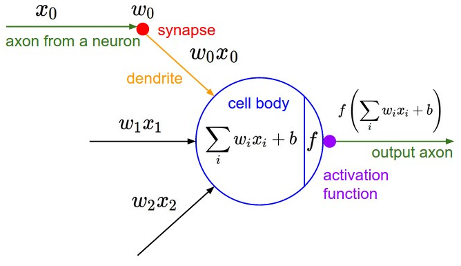

虽然学习神经网络很长时间了，但是也经常遇到问题的时候产生混乱，本次计算做一个神经网络的专题，将我看到的关于神经网络的东西按照我自己的学习和理解习惯整理下来。
本文是这个专题的第一章，介绍基本的神经网络中知识。并在最后整理了一下神经网络的设计中的几个问题，以后会逐一学习。
1 对一个神经元(neuron)建模
人工神经网络一开始是用来对生物神经系统进行建模的，后来发现它在机器学习任务中能够获得比较好的效果，再然后的事情大家就都知道了。
人工神经网络的一个节点是对生物神经元的数学建模，也就是说两者之间是可以类比的。其类比关系如下：
| 生物神经元 | 突触(synapse) | 树突(dendrity) | 细胞体(cell body) | 轴突(axon) |
|---|---|---|---|---|
| 人工神经元 | 权重 $w_i$ | 乘法操作 $w_i \times x_i$ | 激活因子 $a=\sum_i {w_i \times x_i }$ | 激活函数 $f(a)=f(\sum_i {w_i \times x_i })$ |
在生物神经系统中，一个神经元通过树突(dendrity)末梢的突触(synapse)接受另一个神经元传到过来的神经冲动(impulse)，突触上的一些化学物质对接受到的神经冲动产生兴奋或者抑制，树突将通过突触处理的信号传递到细胞体。而一个神经元细胞通过树突和若干个其它细胞相连接，在细胞体上将所有的树突接收到的神经冲动进行汇总，根据汇总的神经冲动决定该神经元是否被激活，并把激活状态信息通过轴突给其它神经元。
在人工神经网络中，一个节点上最先和上一层节点作用的是权重因子 $w_i$(类比于突触), 其作用是控制前一个节点传递过来的信息对于当前节点的影响(兴奋或抑制) 。然后通过类似于树突的结构将信息$w_i \times x_i$传导到细胞体，在细胞体重将所有影响相加得到激活因子$a$。然后根据激活因子的大小按照激活函数$f(a)$来决定这个节点是否被激活并传递给下一个节点。

通过以上分析可以看出，一个神经元实际上就是一个以$w_0 \dots w_n$为参数，$x_0\dots x_n$为输入的函数：
$$
h(x0\dots x_n;w0 \dots w_n)=f(\sum_{i=0}^n {w_i x_i})
$$
其中$f$是用户的定义的激活函数。
2 人工神经网络的结构
人工神经网络是将若干这这样的神经元进行连接来对生物神经系统进行建模的，其中包括 输入层、隐藏层、输入层。每一层由若干节点(神经元)组成。
输入层 (input layer)：训练数据的各维度属性特征，每一个输入层节点对应一个属性。输入层的神经元数量由数据决定。输入层必须有。
隐藏层(hidden layer)：由若干上文所述的完整神经元组成的。隐藏层的层数可以由用户定义，每一层的神经元数量也可以定义，隐藏层可以有，也可以没有。
输出层(output layer)：对于分类问题，输出等的节点数量为类别数量。输出层必须有。
3 前向传播算法(forward propagation)
在Deep Learning中6.5节是这样表述前向传播算法的：
When we use a feedforward neural network to accept an input $x$ and produce an output $\hat y$, information flows forward through the network. The inputs $x$ provide the initial information that then propagates up to the hidden units at each layer and finally produces $\hat y$. This is called forward propagation.
输入信息$x$逐层通过神经网络中的各层，在每一层中经过计算，最终在输出层得到值$\hat y$的过程。 即前向传播算法是将输入信息逐层进行计算，向前进行传播的过程，在这个过程中输入x是确定的，在设计好的神经网络中每一层的计算方式也是确定的(前向传播过程中每个神经元的权重$w_i$ 是确定值)。
4 后向传播算法(back propagation)
先从线性回归模型的训练说起：对于样本集 $(x^{(i)},t^{(i)}),i\in [1,N]$, 括号中上标是样本序号
线性回归模型为： $\hat y_w^{(i)} = w^Tx^{(i)} = \sum_j{w_j x_j}^{(i)}$ （$x$ 和 $\hat y$ 括号中上标是样本序号，$x$的下表为属性序号）
损失函数为： $ E_w = \frac12\sum_{i=1}^N (\hat y_w^{(i)} - t^{(i)}))^2 $
目标函数就是(实际还需要加正则化)： $\min_w E_w$
也就是说通过多次调整参数$w$的值使得损失函数最小化。而这个调整参数的过程就是梯度下降法，迭代公式为：
$$
w_j = w_j - \alpha \frac{\partial}{\partial w_j}E_w
$$
其中: $\alpha$ 是学习率,
$$
\begin {aligned} \\
\frac{\partial}{\partial w_j}E_w &= \frac{\partial}{\partial w_j} \frac12\sum_{i=1}^N (\hat y_w^{(i)} - t^{(i)})^2 \\
& =\sum_{i=1}^N (\hat y_w^{(i)} - t^{(i)})\frac{\partial}{\partial w_j}(\hat y_w^{(i)} - t^{(i)}) \\
&=\sum_{i=1}^N (\hat y_w^{(i)} - t^{(i)})\frac{\partial}{\partial w_j}(\sum_j{w_j x_j}^{(i)} - t^{(i)}) \\
&=\sum_{i=1}^N (\hat y_w^{(i)} - t^{(i)})x_j^{(i)}
\end {aligned}
$$
note: 以上公式是按照梯度下降法推导的, 如果是随机梯度下降法 $N=1$, 如果是mini batch梯度下降法$N=batch size$
回到正题！
前向传播算法实际上就是一个非线性函数$\hat y(x^{(i)},W)$ 。对于每一个样本$(x^{(i)},t^{(i)})$，前向传播算法以$x^{(i)}$为输入产生一个预测值$\hat y_W^{(i)} =\hat y(x^{(i)},W)$。
所以其损失函数为：
$$
E_W^{(i)} = \frac12 (\hat y_W^{(i)} - t^{(i)}))^2
$$
使用随机梯度下降法的$w \in W$的迭代公式为
$$
w_j = w_j - \alpha \frac{\partial}{\partial w_j}E_w
$$
到现在为止一切进行的都很顺利，但是问题来了, $ \frac{\partial}{\partial w_j}E_w$ 怎么求？
上图是PRML中的Figure5.1，其中$y_K$的计算公式为：
$$
y_K(x, w) = \sigma (\sum_{j=1}^M w_{kj}^{(2)} h(\sum_{i=1}^D {w_{ji}^{(1)} x_i} + w_{j0}^{(1)}) + w_{k0}^{(2)})
$$
该公式中 括号中的上标为神经网络的层号，输入层x是第0层，隐藏层z是第1层，输出层y是第2层。
如果要求$w_{ji}^{(1)}$ 中的$w_{11}^{(1)}$ ，根据求导法则需要4次求导。如果神经网络有100层呢？
神经网络由于使用了多层的嵌套结构，导致训练过程中深层的参数$w$的求导过程复杂。
后向传播算法就是用于解决这个问题的，在Deep Learning中6.5节是这样表述后向传播算法的：
During training, forward propagation can continue onward until it produces a scalar cost $J(\theta)$. The back-propagation algorithm, often simply called backprop, allows the information from the cost to then flow backwards through the network, in order to compute the gradient.
也就是说后向传播是将损失函数的信息由输出层向输入层方向逐层传递，用于计算损失函数对参数w的偏导数。
下面按照backpropagation来计算下图中的$ \frac{\partial E}{\partial w_{ji}}$ ，以下所有推到都是按照随机梯度下降法，所以只需要求与第n个样本相关的梯度，故省略n：
上图中由左到右依次为输入层(以$i$为下标, 共$I$个节点)、隐藏层(以$j$为下标, 共$J$个节点)、输出层(以$k$为下标, 共$K$个节点)。
对于每个节点：字母$a$表示激活因子，如：$a_j = \sum_{i=0}^I w_{ji}z_i$ ,$a_k = \sum_{j=0}^J w_{kj}z_j$
隐藏层的激活函数为$h$ , 输出层的激活函数为identity,
字母$z$ 表示节点输出值，如: $z_j = h(a_j)$ ,$z_k = a_k$
首先使用链式法则：
$$
\frac{\partial E}{\partial w_{ji}} = \frac{\partial E}{\partial a_j} \frac{\partial a_j}{\partial w_{ji}} = \delta_j z_i
$$
其中
$$
\frac{\partial a_j}{\partial w_{ji}} =z_i
$$
$$
\delta_j \equiv \frac{\partial E}{\partial a_j}
$$
$\delta_j$表示$j$这个节点对最终的误差需要负多少责任。输出层节点$k$ 的误差是(输出层的激活函数为identity, $\hat y_k = z_k = a_k$ ):
$$
\delta_k =\frac {\partial}{\partial a_k}\frac12(z_k - t_k)^2 = z_k - t_k
$$
后向传播算法可以理解为，误差$\delta$从输出层向输入层方向传播的过程，所以也叫做 Error Backpropagation 。
下面只需要推导$\delta_j$ , 利用链式法则，
$$
\begin{aligned}
\delta_j & \equiv \frac{\partial E}{\partial a_j} \\
&= \sum_{k=1}^K \frac {\partial E}{\partial a_k} \frac{\partial a_k}{\partial a_j} \\
& = h’(a_j) \sum_{k=1}^K w_{kj} \delta_k
\end{aligned}
$$
其中
$$
\frac {\partial E}{\partial a_k} = \delta_k
$$
$$
\begin{aligned}
\frac{\partial a_k}{\partial a_j} & = \frac{\partial }{\partial a_j}(\sum_{j=0}^Jz_j w_{kj}) \\
&=\frac{\partial }{\partial a_j}(\sum_{j=0}^J h(a_j) w_{kj}) \\
&= h’(a_j) w_{kj}
\end{aligned}
$$
后向传播的目标是为了计算偏导数$\frac{\partial E}{\partial w_{ji}}$ ，方法是误差$\delta$ 沿着神经网络向后传播。
PRLM 中5.3.1 节将后向传播的流程总结如下
- Apply an input vector $x_n$ to the network and forward propagate through
the network using $a_j=\sum_iw_{ji}z_i$ and $z_j = h(a_j)$ to find the activations of all the hidden and output units.- Evaluate the $\delta_k$ for all the output units using $\delta_k =\frac {\partial}{\partial a_k}\frac12(z_k - t_k)^2 = z_k - t_k$
- Backpropagate the $\delta$ using $\delta_j = h’(a_j) \sum_{k=1}^K w_{kj} \delta_k $to obtain $\delta_j$ for each hidden unit in the network.
- Use $\frac{\partial E}{\partial w_{ji}} = \delta_j z_i$ to evaluate the required derivatives
5 神经网络问题大纲
最后给自己立一个flag，以下是我整理的几个神经网络的设计中的几个问题，以后会逐一学习。
- 网络结构设计：隐藏层数量、隐藏层神经元数量
- 激活函数选择：ReLu，tanh，sigmoid ……
- Error function 设计：sum-of-squares、Cross Entropy ……
- 正则化问题：L2，dropout ……
- 优化算法的选择：SGD、GD ……
参考资料
CS231n Convolutional Neural Networks for Visual Recognition lecture notes
Deep Leaning
Pattern Recognition and Machine Learning